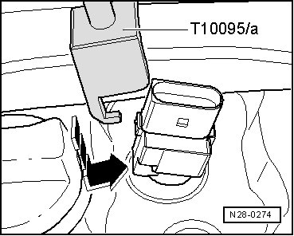
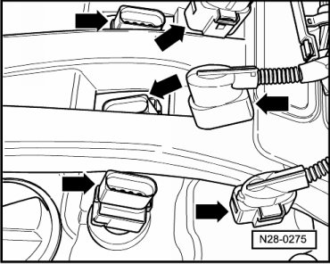

Ignition Coil: Service and Repair
Ignition Coil with Power Output Stage
Special tools, testers and auxiliary items required
• Puller (T10095 A)
• Assembly tool (T10118)
Removing
- Place the assembly tool (T10118) against the release button - arrow -, and carefully remove the connector from the respective ignition coil with power output stage.

- From the straight side of the connector, push the puller (T10095 A) on in the - direction of arrow -, and pull out the ignition coil with power output stage.

Installing
- To install, insert ignition coil with power output stage into corresponding spark plug shaft so that straight connector sides fit with each other - arrows -.

- Slide on puller for ignition coil (T10095 A) from straight connector side in - direction of arrow - and press ignition coil with power output stage on to spark plugs.